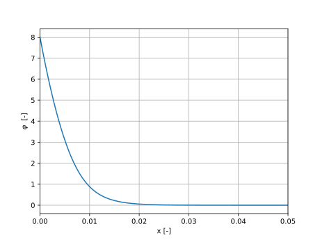
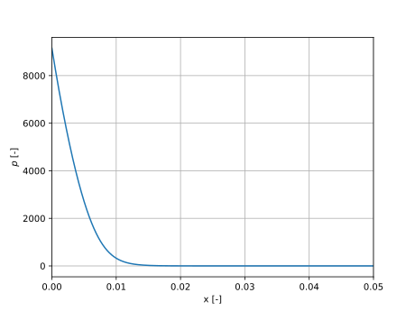
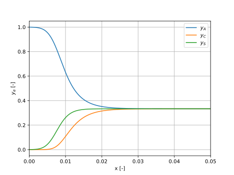

Example
In this example, we are going to solve the thermodynamically consistent electrolyte model for a incompressible, ternary electrolyte, as it is done in “examples/ReproducableCode/TernaryElectrolyte.py”
The code will work if executed in the examples/ReproducableCode folder, as the TernaryElectrolyte.py file is located in the same folder
Import FEniCSx implementation and necessary libraries
import sys
import os
src_path = os.path.join(os.path.dirname(os.path.abspath(__file__)), '../..', 'src')
sys.path.insert(0, src_path)
from Eq04 import solve_System_4eq
del sys.path[0]
import matplotlib.pyplot as plt
import numpy as np
Define parameters and boundary conditions
phi_left = 8.0
phi_right = 0.0
p_right = 0.0
y_A_R = 1/3
y_C_R = 1/3
z_A = -1.0
z_C = 1.0
K = 'incompressible'
Lambda2 = 8.553e-6
a2 = 7.5412e-4
Define mesh and solver settings
number_cells = 1024
refinement_style = 'log'
rtol = 1e-8
Solve the system
y_A, y_C, phi, p, x = solve_System_4eq(phi_left, phi_right, p_right, z_A, z_C, y_A_R, y_C_R, K, Lambda2, a2, number_cells, relax_param=0.05, x0=0, x1=1, refinement_style='hard_log', return_type='Vector', max_iter=1_000, rtol=rtol)
Visualize the results
plt.figure()
plt.plot(x, phi)
plt.xlabel('x [-]')
plt.ylabel('$\\varphi$ [-]')
plt.xlim(0,0.05)
plt.grid()
plt.show()
plt.figure()
plt.plot(x, p)
plt.xlabel('x [-]')
plt.ylabel('$p$ [-]')
plt.xlim(0,0.05)
plt.grid()
plt.show()
plt.figure()
plt.plot(x, y_A, label='$y_A$')
plt.plot(x, y_C, label='$y_C$')
plt.plot(x, 1 - y_A - y_C, label='$y_S$')
plt.xlabel('x [-]')
plt.ylabel('$y_\\alpha$ [-]')
plt.xlim(0,0.05)
plt.grid()
plt.legend()
plt.show()
The electric potential
{kind=link}

The pressure
{kind=link}

The atomic fractions
{kind=link}
